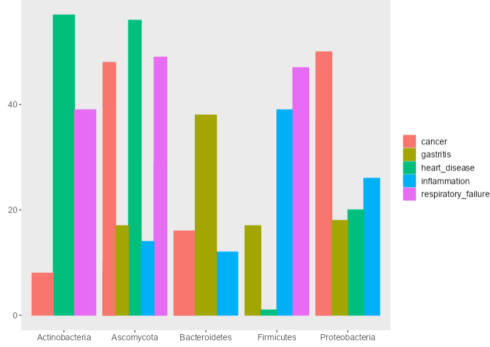
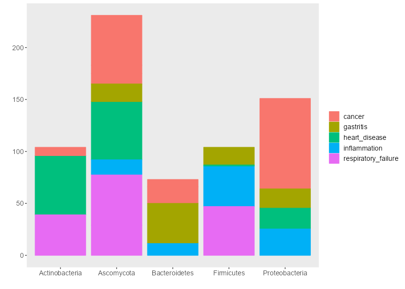

Steps for generating the plot
- Generate a .CSV file containing two variables and the associated numerical value in excel (save as .CSV)
- Upload the .CSV file (see Source Data Table section for the format of the CSV file)
- Tweak the width, height, and text size according to your preference
- Dowload either using right click or go to the Download section
What is a grouped bar chart?
A grouped bar chart (aka clustered bar chart, multi-series bar chart) extends the bar chart,
plotting numeric values for levels of two categorical variables instead of one.
Bars are grouped by position for levels of one categorical variable,
with color indicating the secondary category level within each group.
When should you use a grouped bar chart?
Like a standard bar chart, the grouped bar chart is built for showing a distribution of data points or making comparisons
across different categories of data. Where the grouped bar chart differs is its division of data points across two different
categorical variables, not just one. A grouped bar chart is used when you want to look at how the second category variable
changes within each level of the first, or when you want to look at how the first category variable changes across levels of the second.
We’ll call comparisons of the first type “within-group” comparisons, and comparisons of the second type “between-group”.

What is a stacked bar chart?
If we modified a grouped bar chart where, for each primary group, we stacked bars end-to-end rather than side-by-side, the result would
be a stacked bar chart. Each primary bar’s total length will be the same as if the secondary category was not present, and so a stacked
bar chart puts emphasis on the totals of the primary category levels and the relative part-to-whole contribution of each of the secondary category levels.
